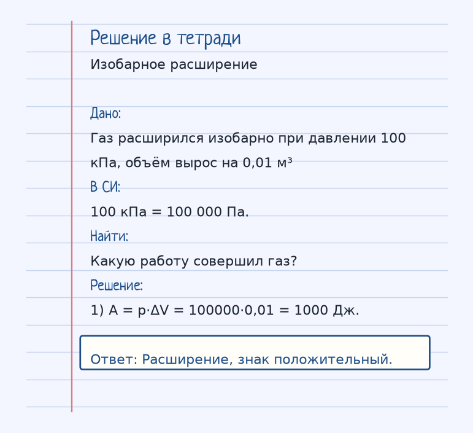
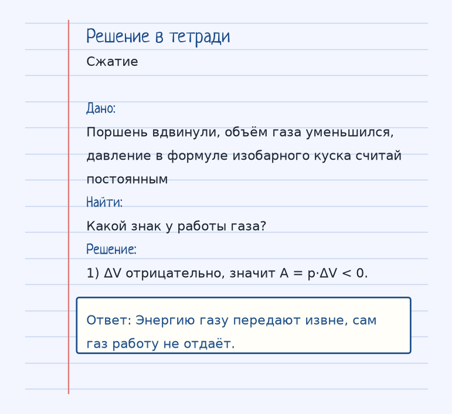

Тема «Работа газа»: физический смысл, единицы величин, типичные ошибки и два разобранных примера.
Схема к условию.
Физический смысл
Работа совершается при изменении объема. При расширении газ совершает положительную работу (отдает энергию). При сжатии — отрицательную (поглощает).
Газ совершает работу, когда меняет объём. Для изобарного расширения A = p·ΔV: давление постоянно, ΔV — изменение объёма.
Знак договариваются так: газ расширяется и отдаёт энергию — работа газа положительна. Газ сжимают, энергию вкладывают в него — работа газа отрицательна. Пуля в стволе — расширение: горячие пороховые газы толкают пулю и совершают положительную работу.
Если объём не изменился, ΔV = 0 и работа в этой формуле равна нулю, даже если газ горячий. Тепло тогда целиком уходит во внутреннюю энергию.
Формула и единицы
A = p · ΔV (для изобарного процесса)
A = p·ΔV на изобаре. p — давление (Па), ΔV — изменение объёма (м³), A в джоулях.
Пояснение
Пуля в стволе. Горячий газ расширяется и толкает пулю — совершает работу.
Пуля в стволе: горячий газ расширяется и толкает пулю. Это положительная работа газа.
Типичные ошибки
Не путай работу газа и работу над газом. При расширении работа газа A > 0. При сжатии для газа A < 0.
Разобранные примеры. Решение каждого открывается отдельно.
Разбор 1
Изобарное расширение
Газ расширился изобарно при давлении 100 кПа, объём вырос на 0,01 м³. Какую работу совершил газ?
На схеме только условие.
Порядок записи: данные, единицы СИ, искомая величина, ход решения, ответ.
Дано. Газ расширился изобарно при давлении 100 кПа, объём вырос на 0,01 м³
В СИ.
100 кПа = 100 000 Па.
Найти. Какую работу совершил газ?
Решение.
A = p·ΔV = 100000·0,01 = 1000 Дж.
Расширение, знак положительный.

Разбор 2
Сжатие
Поршень вдвинули, объём газа уменьшился, давление в формуле изобарного куска считай постоянным. Какой знак у работы газа?
На схеме только условие.
Порядок записи: данные, единицы СИ, искомая величина, ход решения, ответ.
Дано. Поршень вдвинули, объём газа уменьшился, давление в формуле изобарного куска считай постоянным
В СИ.
Найти. Какой знак у работы газа?
Решение.
ΔV отрицательно, значит A = p·ΔV < 0.
Энергию газу передают извне, сам газ работу не отдаёт.

Разбор 3
Изобара 200 кПа
Газ расширился изобарно при 200 кПа, объём вырос на 0,02 м³. Найдите работу газа.
На схеме только условие.
Порядок записи: данные, единицы СИ, искомая величина, ход решения, ответ.
Дано. p = 200 кПа, ΔV = 0,02 м³
В СИ.
200 кПа = 2·10⁵ Па.
Найти. A
Решение.
A = p ΔV = 2·10⁵ · 0,02 = 4000 Дж.
4000 Дж.
Разбор 4
Сжатие
Поршень вдвинули, объём уменьшился на 0,01 м³ при p = 100 кПа. Каков знак работы газа и её модуль?
На схеме только условие.
Порядок записи: данные, единицы СИ, искомая величина, ход решения, ответ.
Дано. ΔV = −0,01 м³, p = 10⁵ Па
В СИ.
Работа газа A = p ΔV.
Найти. A
Решение.
A = 10⁵ · (−0,01) = −1000 Дж.
−1000 Дж.
Разбор 5
Изохора
Объём газа не изменился. Чему равна работа газа в формуле A = p ΔV?
На схеме только условие.
Порядок записи: данные, единицы СИ, искомая величина, ход решения, ответ.
Дано. ΔV = 0
В СИ.
Произведение с нулём.
Найти. A
Решение.
A = 0.
0.
Разбор 6
Имя процесса
Для какого процесса школьная формула A = p ΔV записана без дополнительных оговорок?
На схеме только условие.
Порядок записи: данные, единицы СИ, искомая величина, ход решения, ответ.
Дано. Давление постоянно
В СИ.
Изобарное расширение или сжатие.
Найти. Процесс
Решение.
Формулу применяют к изобарному процессу.
Для изобарного процесса.
Разбор 7
Полтора литра
Газ изобарно расширился на 1,5 л при давлении 2·10⁵ Па. Найдите работу газа.
На схеме только условие.
Порядок записи: данные, единицы СИ, искомая величина, ход решения, ответ.